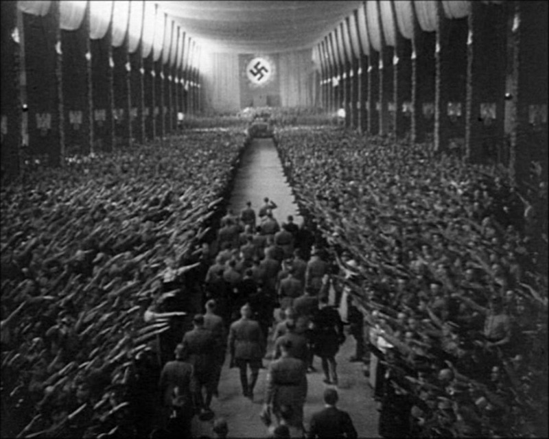
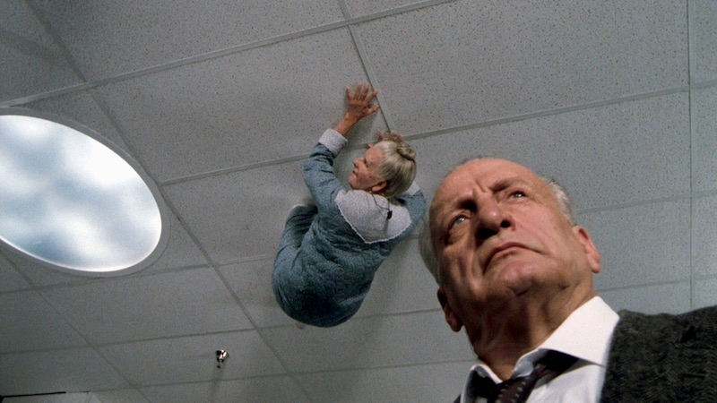
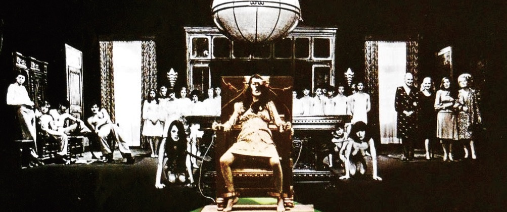
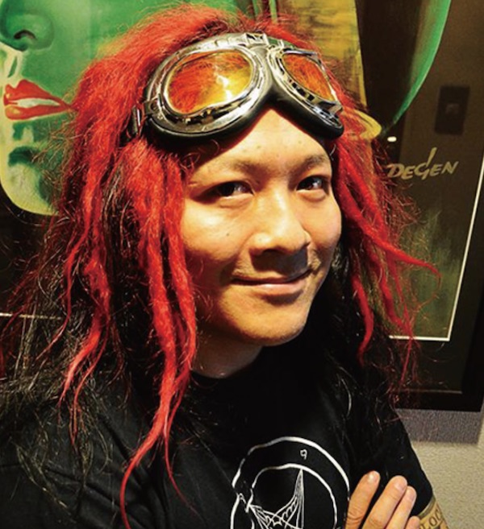

Uneasy times, doomed films
Triumph des Willens

1935/Germany/111min
Director: Leni Riefenstahl
Cast: Adolf Hitler, Rudolf Hess, Joseph Goebbels, Heinrich Himmler
The propaganda film of the Third Reich by the German Nazi regime which led Europe into catastrophe. Its devilish fascination drove the people of the time crazy and accelerated the force of the Nazis.
THE EXORCIST Ⅲ


1990/USA/110min
Director, writer: William Peter Blatty
Cast: George C. Scott, Brad Dourif, Ed Flanders, Jason Miller
Set 17 years after the story of the original Exorcist. A father gets beheaded in a confession box, a man who is supposed to be dead is confined in a mental hospital, a old man in dementia stuck to the ceiling. Directed by the writer of the original Exorcist novel. Shown with intense image and Bakuon (explosive sound) screening.
Das Testament des Dr. Mabuse
1933/Germany/122min
Director: Fritz Lang
Cast: Rudolf Klein-Rogge, Otto Wernicke
Dr. Mabuse plans to destroy the order of society from his cell in an asylum. His thoughts spread beyond places and time. This film from 80 years ago that almost prophesied coming destruction of Germany has not aged at all.
The Ninth Configuration

1980/USA/118min
Director, writer: William Peter Blatty
Cast: Stacy Keach, Scott Wilson, Jason Miller, Joe Spinell
Colonel Kane has arrived in his new post of director in an army asylum, but he has a secret. This movie portrays the world as full of violence and absurd, and leaves inexpressible strange feelings. You will never forget this movie.
The Tragedy of Macbeth
1971/USA, UK/140min
Director, writer: Roman Polanski
Cast: Jon Finch, Francesca Annis, Martin Shaw, John Stride
Shakespeare's play is portrayed with violent, cruel realism. The mental scenery of Polanski whose wife was murdered by that cult (godless world) is expressed in the film.
Salò o le 120 giornate di Sodoma

1975/Italy/116min
Director, writer: Pier Paolo Pasolini
Story: Marquis de Sade
Music: Ennio Morricone
Cast: Paolo Bonacelli, Giorgio Cataldi
In Nazi-occupied Italy, this film obstinately depicts a crazy feast of perversion in a fascist palace. This is the last film of Pasolini who was murdered by a boy who performed in the film.
[Talk event] The Vivisection of Cinema × Satanist 9/22 (Thu) 17:30-

Heitaro Inoh (Shigeo Yokoyama)
Born in Osaka in 1954. Writer. Author of the novels "Night of Aquarium" and "Amnesia". His other non-fiction works include "Something Is Flying the Sky" (about UFO theory, occultism), coauthor of "The Vivisection of Cinema" with Hiroshi Takahashi. Under the name of Shigeo Yokoyama, he wrote "Consecrated Flesh", "Texts of Deformity", "Holy Angels of God -Angel Summoning of John Dee 1581-1607"
Hiroshi Takahashi
Born in Chiba in 1959. Writer: "Don't Look Up", "Ring", "Inferno infringement", "The Revenge I: A Visit from Fate", "Serpent's Path", "Crazy Lips", "Gore from Outer Space", "Orochi - Blood" etc.. Director: Sodom the Killer", "Sea of Madness", "The Sylvian Experiments", "The Carol of the Old Ones". He also wrote a book "Evil of Cinema" And coauthor of "The Vivisection of Cinema" with Heitaro Inoh.
Yoshiki Takahashi
Born in Tokyo in 1969. Designer, writer, satanist. Art director of a movie magazine "Eiga Hiho". He has designed many DVD packages and movie posters. His written works are "Sympathy by the Devil", "Beneath the Sympathy by the Devil" and "Underworld Document"series.